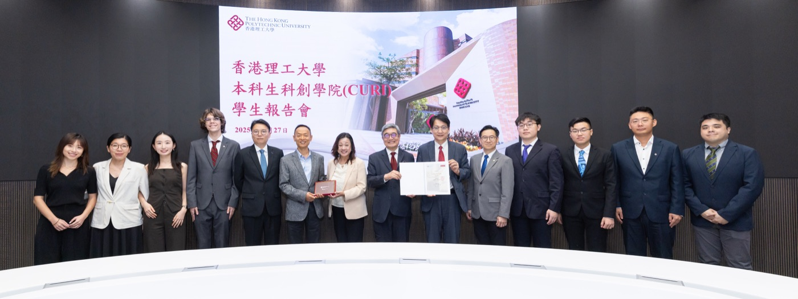

November 2025. Sihui KE and Yiran LI presented the STEM Vocabulary Research Project to PolyU’s CURI (創新書院) and the Hong Kong Wenzhounese Charity Fund.

Project updates
November 2025. Sihui KE and Yiran LI presented the STEM Vocabulary Research Project to PolyU’s CURI (創新書院) and the Hong Kong Wenzhounese Charity Fund.
